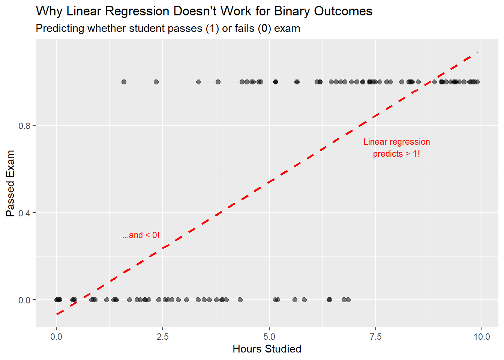
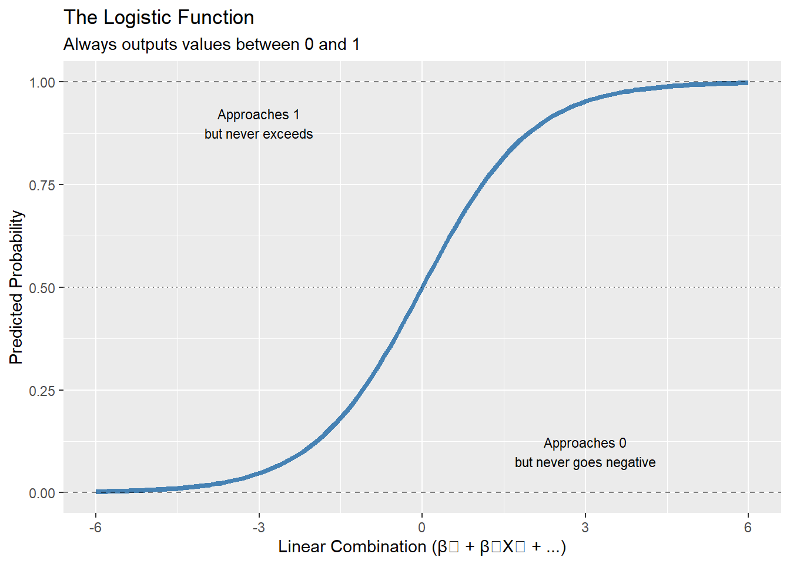
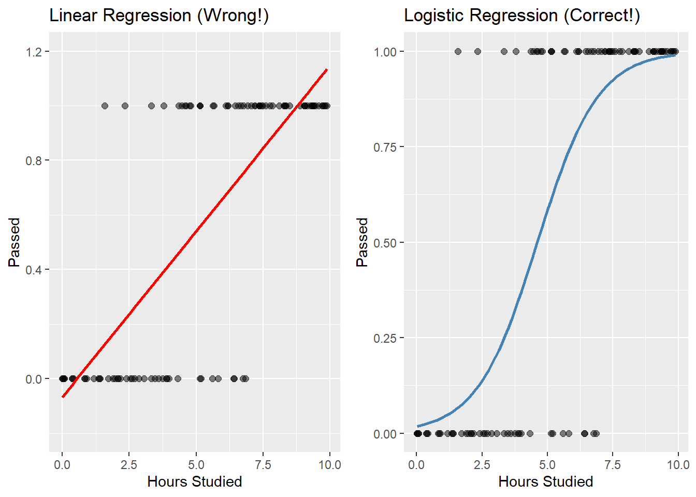
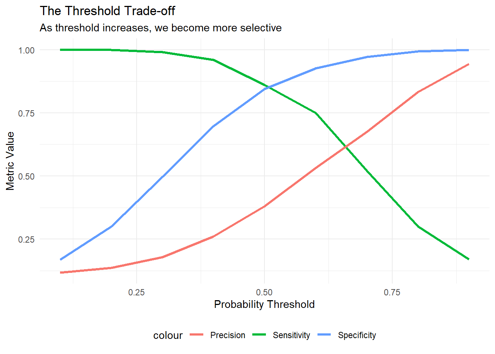
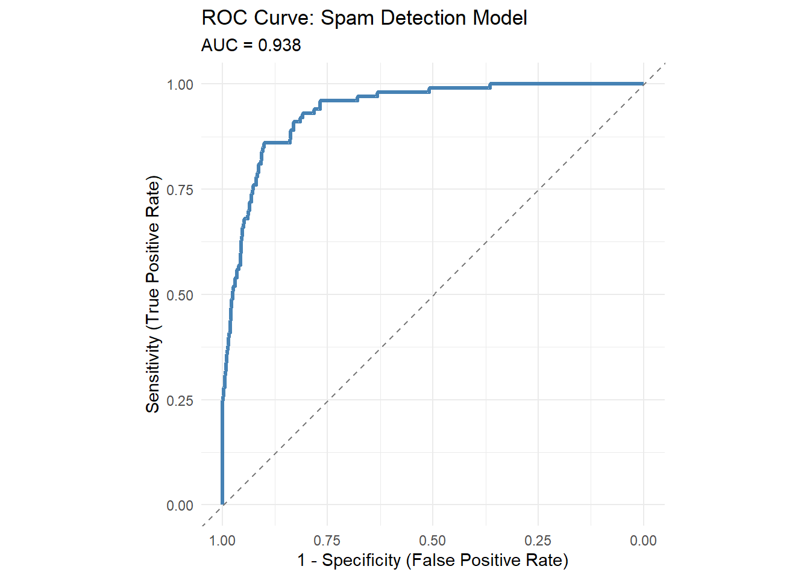

Logistic Regression for Binary Outcomes
Week 10: Introduction to Logistic Regression
Opening: A New Kind of Prediction
A Decision with Real Consequences
Scenario: A state corrections department asks you to help predict:
Will someone released from prison be arrested again within 3 years?
Not asking: How many times? How long until?
Asking: Yes or no? Will it happen or not?
Discussion question (1 minute):
- How is this different from predicting home prices?
- Why might they want this prediction?
- What could go wrong?
Part 1: Introduction to Logistic Regression
Where We’ve Been
Weeks 1-7: Linear regression
- Predicting continuous outcomes: home prices, income, population
- Y = β₀ + β₁X₁ + β₂X₂ + … + ε
- Used RMSE to evaluate predictions
Last week: Poisson regression
- Predicting count outcomes: number of crimes
- Different distribution, but still predicting quantities
Today: A fundamentally different question
- Not “how much?” but “will it happen?”
- Binary outcomes: yes/no, 0/1, success/failure
- This requires a completely different approach
What Makes Binary Outcomes Different?
The problem with linear regression for binary outcomes:
Problems:
- Predictions can be > 1 or < 0 (makes no sense for probability!)
- Assumes constant effect across range (not realistic)
- Violates regression assumptions (errors aren’t normal)
Enter: Logistic Regression
The solution: Transform the problem!
Instead of predicting Y directly, predict the probability that Y = 1
The logistic function constrains predictions between 0 and 1:
\[p(X) = \frac{1}{1+e^{-(\beta_0 + \beta_1X_1 + ... + \beta_kX_k)}}\]

Logistic vs. Linear: Visual Comparison

Key difference: Logistic regression produces valid probabilities!
When Do We Use Logistic Regression?
Perfect for binary classification problems in policy:
Criminal Justice:
- Will someone reoffend? (recidivism)
- Will someone appear for court? (flight risk)
Health:
- Will patient develop disease? (risk assessment)
- Will treatment be successful? (outcome prediction)
Economics:
- Will loan default? (credit risk)
- Will person get hired? (employment prediction)
Urban Planning:
- Will building be demolished? (blight prediction)
- Will household participate in program? (uptake prediction)
The Logit Transformation
Behind the scenes: We work with log-odds, not probabilities directly
Odds: \(\text{Odds} = \frac{p}{1-p}\)
Log-Odds (Logit): \(\text{logit}(p) = \ln\left(\frac{p}{1-p}\right)\)
This creates a linear relationship: \[\ln\left(\frac{p}{1-p}\right) = \beta_0 + \beta_1X_1 + \beta_2X_2 + ...\]
Why this matters:
- Coefficients are log-odds (like linear regression!)
- But we interpret as odds ratios when exponentiated: \(e^{\beta}\)
- OR > 1: predictor increases odds of outcome
- OR < 1: predictor decreases odds of outcome
Part 2: Building Our First Logistic Model
Example: Email Spam Detection
Let’s build a simple spam detector to understand the mechanics.
Goal: Predict whether email is spam (1) or legitimate (0)
Predictors: - Number of exclamation marks - Contains word “free” - Email length
Code
# Create example spam detection data
set.seed(123)
n_emails <- 1000
spam_data <- data.frame(
exclamation_marks = c(rpois(100, 5), rpois(900, 0.5)), # Spam has more !
contains_free = c(rbinom(100, 1, 0.8), rbinom(900, 1, 0.1)), # Spam mentions "free"
length = c(rnorm(100, 200, 50), rnorm(900, 500, 100)), # Spam is shorter
is_spam = c(rep(1, 100), rep(0, 900))
)
# Look at the data
head(spam_data) exclamation_marks contains_free length is_spam
1 4 1 150.21006 1
2 7 1 148.00225 1
3 4 1 199.10099 1
4 8 0 193.39124 1
5 9 0 72.53286 1
6 2 1 252.02867 1Fitting the Logistic Model
In R, we use glm() with family = "binomial"
Code
# Fit logistic regression
spam_model <- glm(
is_spam ~ exclamation_marks + contains_free + length,
data = spam_data,
family = "binomial" # This specifies logistic regression
)
# View results
summary(spam_model)
Call:
glm(formula = is_spam ~ exclamation_marks + contains_free + length,
family = "binomial", data = spam_data)
Coefficients:
Estimate Std. Error z value Pr(>|z|)
(Intercept) 233.048 15015.736 0.016 0.988
exclamation_marks 55.945 53708.285 0.001 0.999
contains_free 46.055 49298.975 0.001 0.999
length -1.273 81.369 -0.016 0.988
(Dispersion parameter for binomial family taken to be 1)
Null deviance: 6.5017e+02 on 999 degrees of freedom
Residual deviance: 7.5863e-07 on 996 degrees of freedom
AIC: 8
Number of Fisher Scoring iterations: 25Interpreting Coefficients
Code
# Extract coefficients
coefs <- coef(spam_model)
print(coefs) (Intercept) exclamation_marks contains_free length
233.048051 55.944824 46.055006 -1.272668 Code
# Convert to odds ratios
odds_ratios <- exp(coefs)
print(odds_ratios) (Intercept) exclamation_marks contains_free length
1.627356e+101 1.979376e+24 1.003310e+20 2.800833e-01 Interpretation:
exclamation_marks: Each additional ! multiplies odds of spam by 1.979376e+24contains_free: Having “free” multiplies odds by 1.00331e+20length: Each additional character multiplies odds by 0.2801 (shorter = more likely spam)
Making Predictions
The model outputs probabilities:
Code
# Predict probability for a new email
new_email <- data.frame(
exclamation_marks = 3,
contains_free = 1,
length = 150
)
predicted_prob <- predict(spam_model, newdata = new_email, type = "response")
cat("Predicted probability of spam:", round(predicted_prob, 3))Predicted probability of spam: 1But now what?
- If probability = 0.723, is this spam or not?
- We need to choose a threshold (cutoff)
- Threshold = 0.5 is common default, but is it the right choice?
The Fundamental Challenge
This is where logistic regression gets interesting (and complicated):
The model gives us probabilities, but we need to make binary decisions.
Question: What probability threshold should we use to classify?
- Threshold = 0.5? (common default)
- Threshold = 0.3? (more aggressive - flag more as spam)
- Threshold = 0.7? (more conservative - only flag obvious spam)
The answer depends on:
- Cost of false positives (marking legitimate email as spam)
- Cost of false negatives (missing actual spam)
- These costs are rarely equal!
The rest of today: How do we evaluate these predictions and choose thresholds?
Part 3: Evaluating Binary Predictions
From Probabilities to Decisions
We now have a model that predicts probabilities.
But policy decisions require binary choices: spam/not spam, approve/deny, intervene/don’t intervene.
This requires two steps:
- Choose a threshold to convert probabilities → binary predictions
- Evaluate how good those predictions are
The confusion matrix helps us with step 2
Part 3a: Confusion Matrices
The Four Outcomes
When we make binary predictions, four things can happen:
Model says “Yes”:
- True Positive (TP): Correct! ✓
- False Positive (FP): Wrong - Type I error
Model says “No”:
- True Negative (TN): Correct! ✓
- False Negative (FN): Wrong - Type II error

Remember: The model predicts probabilities. WE choose the threshold that converts probabilities to yes/no predictions.
Quick Example: COVID Testing
Scenario: Testing for COVID-19
| True_Status | Test_Result | Outcome | Consequence |
|---|---|---|---|
| Positive | Positive | True Positive (TP) | Quarantine (correct) |
| Positive | Negative | False Negative (FN) | Goes to work, spreads virus |
| Negative | Positive | False Positive (FP) | Quarantines unnecessarily |
| Negative | Negative | True Negative (TN) | Goes to work (correct) |
Which error is worse?
- False Negative → Virus spreads
- False Positive → Unnecessary quarantine
The answer depends on context! (And changes our threshold choice)
Calculating Performance Metrics
From the confusion matrix, we derive metrics that emphasize different trade-offs:
Sensitivity (Recall, True Positive Rate): \[\text{Sensitivity} = \frac{TP}{TP + FN}\] “Of all actual positives, how many did we catch?”
Specificity (True Negative Rate): \[\text{Specificity} = \frac{TN}{TN + FP}\] “Of all actual negatives, how many did we correctly identify?”
Precision (Positive Predictive Value): \[\text{Precision} = \frac{TP}{TP + FP}\] “Of all our positive predictions, how many were correct?”
Interactive Example: Spam Detection
Let’s say we have an email spam filter:
- 100 actual spam emails
- 900 actual legitimate emails
- Our model makes predictions…
Code
# Create example predictions
set.seed(123)
spam_data <- data.frame(
actual_spam = c(rep(1, 100), rep(0, 900)),
predicted_prob = c(rnorm(100, 0.7, 0.2), rnorm(900, 0.3, 0.2))
) %>%
mutate(predicted_prob = pmax(0.01, pmin(0.99, predicted_prob)))
# With threshold = 0.5
spam_data <- spam_data %>%
mutate(predicted_spam = ifelse(predicted_prob > 0.5, 1, 0))
# Calculate confusion matrix
conf_mat <- confusionMatrix(
as.factor(spam_data$predicted_spam),
as.factor(spam_data$actual_spam),
positive = "1"
)Spam Filter Results
Reference
Prediction 0 1
0 760 14
1 140 86
Sensitivity: 0.86 - We caught 86 % of spamSpecificity: 0.844 - We correctly identified 84.4 % of legitimate emailsPrecision: 0.381 - Of emails marked spam, 38.1 % actually were spamQuestion: What happens if we change the threshold?
Part 4: The Threshold Decision
Why Threshold Choice Matters
Remember: The model gives us probabilities. We decide what probability triggers action.
Threshold = 0.3 (low bar) - More emails marked as spam - Higher sensitivity (catch more spam) - Lower specificity (more false alarms)
Threshold = 0.7 (high bar) - Fewer emails marked as spam - Lower sensitivity (miss some spam) - Higher specificity (fewer false alarms)
There is no “right” answer - it depends on the costs of each type of error
The Great Sensitivity-Specificity Trade-off

Two Policy Scenarios
Scenario A: Rare, deadly disease screening
- Disease is rare but fatal if untreated
- Treatment is safe with minor side effects
- Goal: Don’t miss any cases (high sensitivity)
- Acceptable: Some false positives (low threshold)
Scenario B: Identifying “high-risk” individuals for intervention
- Limited intervention slots
- False positives waste resources
- False negatives miss opportunities to help
- Goal: Use resources efficiently (high precision)
- Decision depends on: Cost of intervention vs. cost of missed case
Class discussion: Which metrics matter most for each scenario?
Part 5: ROC Curves
The ROC Curve: Visualizing All Thresholds
ROC = Receiver Operating Characteristic
(Originally developed for radar signal detection in WWII)
What it shows:
- Every possible threshold
- Trade-off between True Positive Rate (Sensitivity) and False Positive Rate (1 - Specificity)
- Lower threshold → flag more cases → higher sensitivity, but more false positives
- Higher threshold → flag fewer cases → fewer false positives, but miss more
- Overall model discrimination ability
Creating an ROC Curve

Area Under the Curve (AUC): 0.938How to read it:
- X-axis: False Positive Rate (1 - Specificity)
- Y-axis: True Positive Rate (Sensitivity)
- Diagonal line: Random guessing
- Top-left corner: Perfect prediction
Interpreting AUC
AUC (Area Under the Curve) summarizes overall model performance:
- AUC = 1.0: Perfect classifier
- AUC = 0.9-1.0: Excellent
- AUC = 0.8-0.9: Good
- AUC = 0.7-0.8: Acceptable
- AUC = 0.6-0.7: Poor
- AUC = 0.5: No better than random guessing
- AUC < 0.5: Worse than random (your model is backwards!)
Our spam filter AUC = 0.938
Interpretation: The model has good discrimination ability, but…
- AUC doesn’t tell us which threshold to use
- AUC doesn’t account for class imbalance
- AUC doesn’t show us equity implications
Part 6: Equity Considerations
The Core Problem: Disparate Impact
A model can be “accurate” overall but perform very differently across groups
Example metrics from a recidivism model:
| Group | Sensitivity | Specificity | False Positive Rate |
|---|---|---|---|
| Overall | 0.72 | 0.68 | 0.32 |
| Group A | 0.78 | 0.74 | 0.26 |
| Group B | 0.64 | 0.58 | 0.42 |
Group B experiences:
- Lower sensitivity (more people who will reoffend are missed)
- Lower specificity (more people who won’t reoffend are flagged)
- Higher false positive rate (more unjust interventions)
This is algorithmic bias in action
Real-World Case: COMPAS
COMPAS: Commercial algorithm used in criminal justice to predict recidivism
ProPublica investigation (2016) found:
- Similar overall accuracy for Black and White defendants
- BUT: False positive rates differed dramatically
- Black defendants: 45% false positive rate
- White defendants: 23% false positive rate
- Black defendants twice as likely to be incorrectly labeled “high risk”
Result:
- Different threshold needed for different groups to achieve equity
- But single-threshold systems are the norm
- Key insight: Overall accuracy masks disparate impact
How to Choose a Threshold
Framework for Threshold Selection
Step 1: Understand the consequences
- What happens with a false positive?
- What happens with a false negative?
- Are costs symmetric or asymmetric?
Step 2: Consider stakeholder perspectives
- Who is affected by each type of error?
- Do all groups experience consequences equally?
Step 3: Choose your metric priority
- Maximize sensitivity? (catch all positives)
- Maximize specificity? (minimize false alarms)
- Balance precision and recall? (F1 score)
- Equalize across groups?
Step 4: Test multiple thresholds
- Evaluate performance across thresholds
- Look at group-wise performance
- Consider sensitivity analysis
Cost-Benefit Analysis Approach
Assign concrete costs to errors:
Example: Disease screening
- True Positive: Treatment cost $1000, prevent $50,000 in complications
- False Positive: Unnecessary treatment $1000
- True Negative: No cost
- False Negative: Miss disease, $50,000 in complications later
Calculate expected cost at each threshold: \[E[\text{Cost}] = C_{FP} \times FP + C_{FN} \times FN\]
Choose threshold that minimizes expected cost
Note: This assumes we can quantify all costs, which is often impossible for justice/equity concerns
Practical Recommendations
- Report multiple metrics - not just accuracy
- Show the ROC curve - demonstrates trade-offs
- Test multiple thresholds - document your choice
- Evaluate by sub-group - check for disparate impact
- Document assumptions - explain why you chose your threshold
- Consider context - what are the real-world consequences?
- Provide uncertainty - confidence intervals, not just point estimates
- Enable recourse - can predictions be challenged?
Most importantly: Be transparent about limitations and potential harms